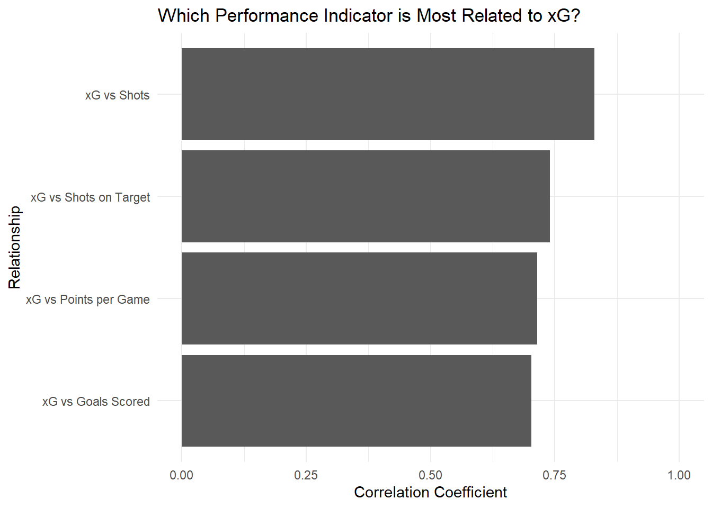
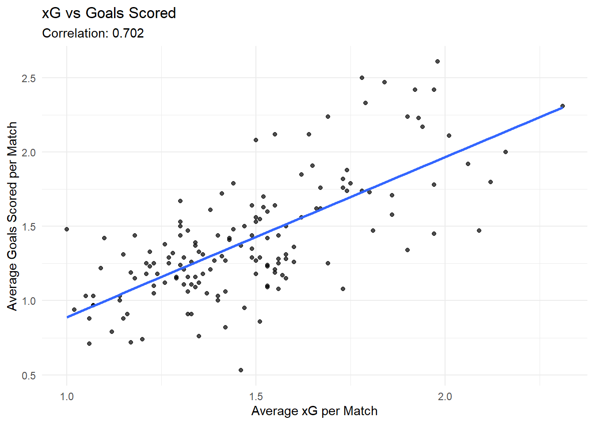
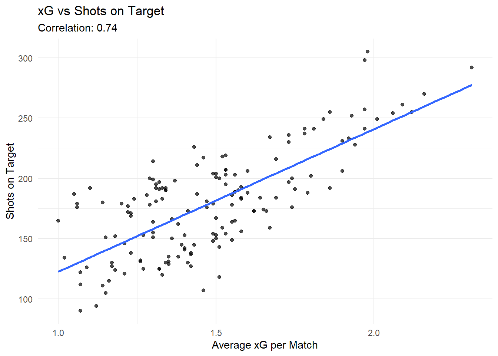
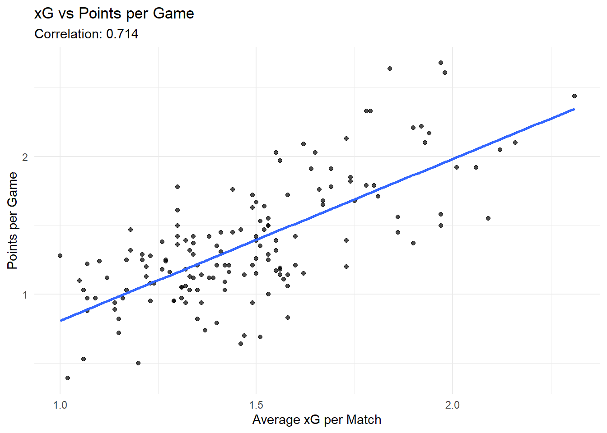
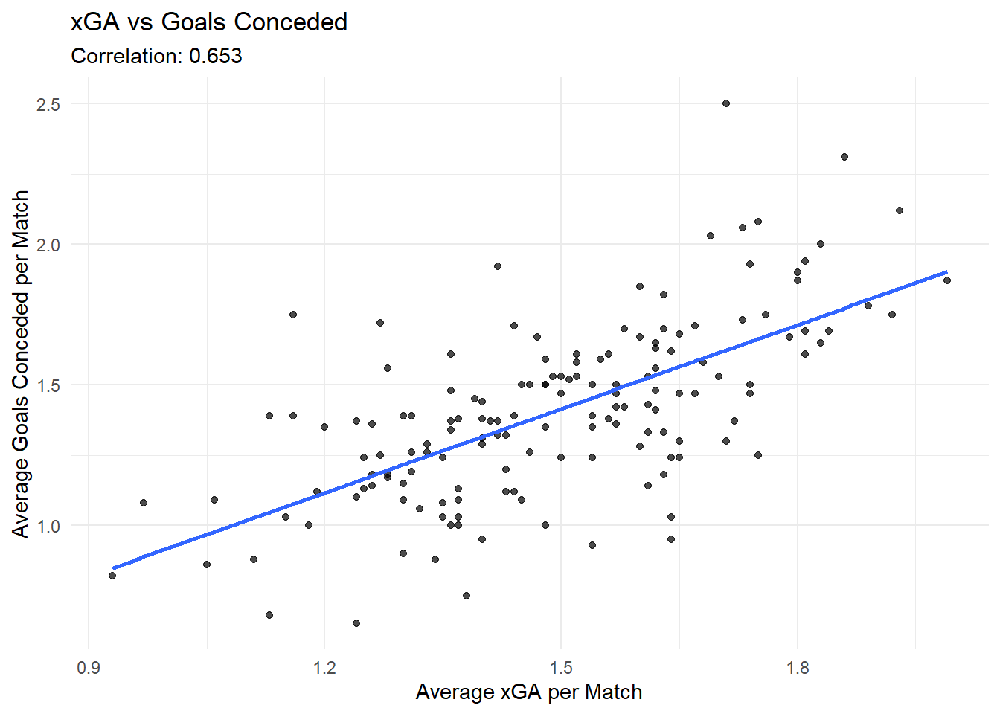
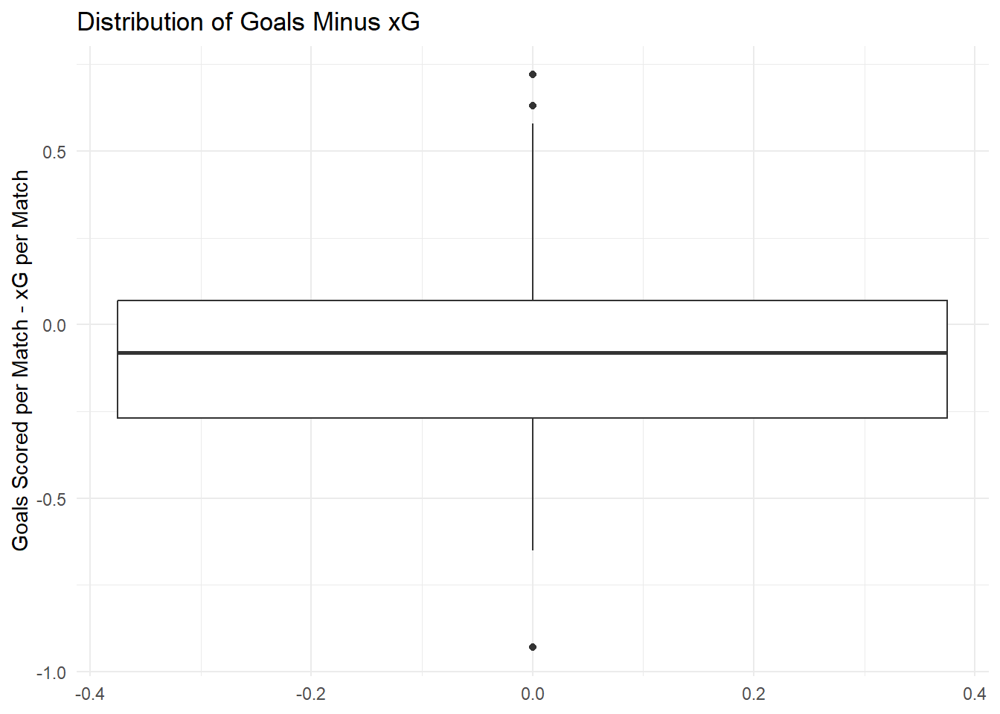
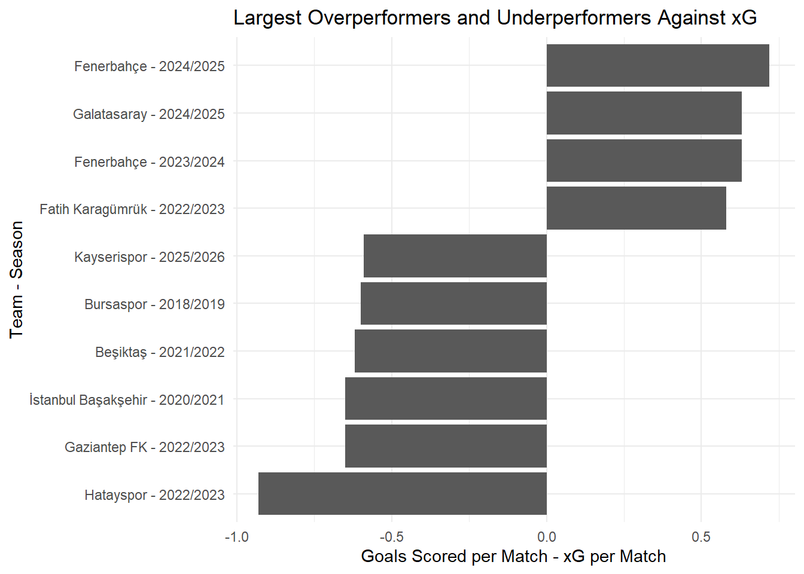

Code
library(dplyr)
library(tidyr)
library(ggplot2)
library(knitr)
load("data/processed/super_lig_xg_core_data_cleaned.RData")Expected Goals, commonly known as xG, is a football analytics metric that estimates the quality of chances created by a team. It does not directly measure the final score. Instead, it shows how many goals a team would be expected to score based on the quality of its chances.
Before focusing only on goals, we first compare the relationship between xG and different performance indicators. This helps us understand whether xG is more closely related to actual goals, shooting performance, or overall league performance.
xg_correlations <- tibble::tibble(
relationship = c(
"xG vs Goals Scored",
"xG vs Shots on Target",
"xG vs Shots",
"xG vs Points per Game"
),
correlation = c(
cor(core_data_cleaned$xg_for_avg_overall,
core_data_cleaned$goals_scored_per_match,
use = "complete.obs"),
cor(core_data_cleaned$xg_for_avg_overall,
core_data_cleaned$shots_on_target,
use = "complete.obs"),
cor(core_data_cleaned$xg_for_avg_overall,
core_data_cleaned$shots,
use = "complete.obs"),
cor(core_data_cleaned$xg_for_avg_overall,
core_data_cleaned$points_per_game,
use = "complete.obs")
)
)
xg_correlations# A tibble: 4 × 2
relationship correlation
<chr> <dbl>
1 xG vs Goals Scored 0.702
2 xG vs Shots on Target 0.740
3 xG vs Shots 0.829
4 xG vs Points per Game 0.714
The bar chart compares the strength of the relationship between xG and selected performance indicators. A higher correlation means that the variable has a stronger positive relationship with xG.
Since xG is designed to measure expected scoring performance, we expect the relationship between xG and goals scored to be one of the most meaningful comparisons. However, shots on target and points per game can also provide useful context about attacking and overall team performance.
The first direct relationship we analyze is xG and actual goals scored. This is the most natural comparison because xG is designed to estimate expected scoring performance.
[1] 0.702281ggplot(
core_data_cleaned,
aes(x = xg_for_avg_overall, y = goals_scored_per_match)
) +
geom_point(alpha = 0.7) +
geom_smooth(method = "lm", se = FALSE) +
labs(
title = "xG vs Goals Scored",
subtitle = paste("Correlation:", round(cor_xg_goals, 3)),
x = "Average xG per Match",
y = "Average Goals Scored per Match"
) +
theme_minimal()`geom_smooth()` using formula = 'y ~ x'
The scatter plot shows a positive relationship between xG and goals scored. This means that teams creating higher-quality chances generally score more goals.
However, the relationship is not perfect. The points are not located exactly on a single straight line. This is expected because actual goals are affected by finishing quality, goalkeeper performance, defensive pressure, and randomness.
Therefore, xG is useful for explaining scoring performance, but it should not be interpreted as a perfect predictor of goals.
Next, we compare xG with shots on target. This relationship is useful because shots on target show how often a team produces direct scoring threats.
[1] 0.739523ggplot(
core_data_cleaned,
aes(x = xg_for_avg_overall, y = shots_on_target)
) +
geom_point(alpha = 0.7) +
geom_smooth(method = "lm", se = FALSE) +
labs(
title = "xG vs Shots on Target",
subtitle = paste("Correlation:", round(cor_xg_sot, 3)),
x = "Average xG per Match",
y = "Shots on Target"
) +
theme_minimal()`geom_smooth()` using formula = 'y ~ x'
The relationship between xG and shots on target helps us understand whether teams with higher expected goals also produce more accurate attacking attempts.
A positive relationship is expected because teams that create more dangerous chances usually also record more shots on target. However, this relationship may not be perfect because xG depends on chance quality, while shots on target mainly counts whether the shot was on target.
We also analyze the relationship between xG and points per game. This comparison is more indirect than the relationship between xG and goals because points are affected by both attacking and defensive performance.
[1] 0.7140412ggplot(
core_data_cleaned,
aes(x = xg_for_avg_overall, y = points_per_game)
) +
geom_point(alpha = 0.7) +
geom_smooth(method = "lm", se = FALSE) +
labs(
title = "xG vs Points per Game",
subtitle = paste("Correlation:", round(cor_xg_points, 3)),
x = "Average xG per Match",
y = "Points per Game"
) +
theme_minimal()`geom_smooth()` using formula = 'y ~ x'
The relationship between xG and points per game shows whether teams that create better chances also collect more points.
This relationship may be weaker than the relationship between xG and goals scored. This is normal because points per game depends not only on attacking performance, but also on defensive strength, match results, opponent quality, and consistency across the season.
Finally, we analyze the defensive side by comparing xGA and goals conceded. xGA represents the quality of chances that a team allows its opponents to create.
[1] 0.652705ggplot(
core_data_cleaned,
aes(x = xg_against_avg_overall, y = goals_conceded_per_match)
) +
geom_point(alpha = 0.7) +
geom_smooth(method = "lm", se = FALSE) +
labs(
title = "xGA vs Goals Conceded",
subtitle = paste("Correlation:", round(cor_xga_conceded, 3)),
x = "Average xGA per Match",
y = "Average Goals Conceded per Match"
) +
theme_minimal()`geom_smooth()` using formula = 'y ~ x'
The defensive analysis shows whether expected goals against is related to actual goals conceded. A positive relationship means that teams allowing higher-quality chances generally concede more goals.
However, this relationship is also not perfect. Goalkeeper performance, opponent finishing quality, defensive actions, and randomness can create differences between expected goals against and actual goals conceded.
Although xG is related to goals and other performance indicators, the correlation is not expected to be exactly 1. This is because xG measures probability, not certainty.
For example, a team can create high-quality chances but fail to score because of poor finishing or strong goalkeeper performance. Another team can score from low-quality chances because of excellent finishing or defensive mistakes. Therefore, actual goals may differ from expected goals.
In simple terms, xG explains chance quality, but it does not fully explain every detail of football. Match outcomes are also affected by finishing skill, goalkeeper performance, tactical decisions, pressure, opponent quality, and randomness.

The boxplot shows that actual goals are not always equal to xG. Some teams scored more than expected, while others scored less than expected. This variation explains why the correlation between xG and goals is not perfect.
core_data_cleaned %>%
arrange(desc(abs(goals_minus_xg))) %>%
slice_head(n = 10) %>%
mutate(team_season = paste(common_name, season, sep = " - ")) %>%
ggplot(aes(x = reorder(team_season, goals_minus_xg), y = goals_minus_xg)) +
geom_col() +
coord_flip() +
labs(
title = "Largest Overperformers and Underperformers Against xG",
x = "Team - Season",
y = "Goals Scored per Match - xG per Match"
) +
theme_minimal()
This chart highlights the teams with the largest differences between actual goals and expected goals. Positive values indicate teams that scored more than expected, while negative values indicate teams that scored less than expected.
These differences support the idea that xG is an informative metric, but actual football outcomes still include finishing quality, goalkeeper performance, and random variation.
This section shows that xG is positively related to actual goals scored, shots on target, and points per game. Among these variables, goals scored is the most direct comparison because xG is designed to measure expected scoring performance.
The analysis also shows that xGA is related to goals conceded. This means expected goals can be useful not only for attacking analysis, but also for defensive evaluation.
However, the relationship between xG and actual performance is not perfect. xG measures chance quality, not guaranteed goals. Therefore, finishing quality, goalkeeper performance, tactical decisions, opponent quality, and randomness can create differences between expected and actual outcomes.